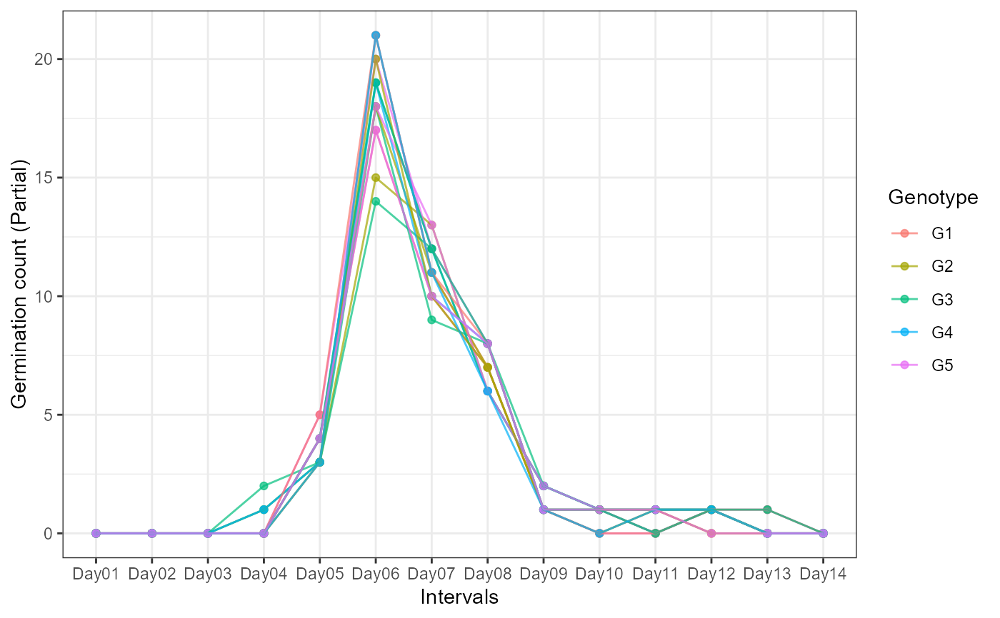
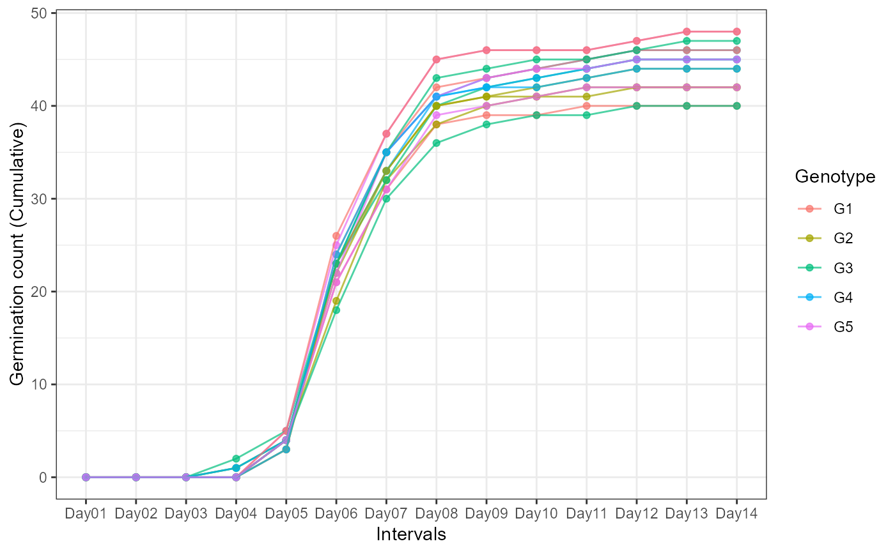

An example germination count dataset. It includes germination count data over 14 days from five genotypes (G1 to G5) in three replications
gcdata
A data frame with 17 columns:
The genotype.
Replication.
Number of seeds that germinated (germination counts) on Day 1.
Number of seeds that germinated (germination counts) on Day 2.
Number of seeds that germinated (germination counts) on Day 3.
Number of seeds that germinated (germination counts) on Day 4.
Number of seeds that germinated (germination counts) on Day 5.
Number of seeds that germinated (germination counts) on Day 6.
Number of seeds that germinated (germination counts) on Day 7.
Number of seeds that germinated (germination counts) on Day 8.
Number of seeds that germinated (germination counts) on Day 9.
Number of seeds that germinated (germination counts) on Day 10.
Number of seeds that germinated (germination counts) on Day 11.
Number of seeds that germinated (germination counts) on Day 12.
Number of seeds that germinated (germination counts) on Day 13.
Number of seeds that germinated (germination counts) on Day 14.
Total number of seeds tested.
# \donttest{ data(gcdata) library(ggplot2) library(reshape2) # Plot partial germination counts over time #---------------------------------------------------------------------------- # Convert wide-from to long-form gcdatamelt <- melt(gcdata[, !names(gcdata) %in% c("Total Seeds")], id.vars = c("Genotype", "Rep")) ggplot(gcdatamelt, aes(x = variable, y = value, group = interaction(Genotype, Rep), colour = Genotype)) + geom_point(alpha = 0.7) + geom_line(alpha = 0.7) + ylab("Germination count (Partial)") + xlab("Intervals") + theme_bw()# Plot partial germination counts over time #---------------------------------------------------------------------------- # Convert wide-from to long-form # Compute cumulative germination counts gcdata2 <- gcdata gcdata2[, !names(gcdata2) %in% c("Genotype", "Rep", "Total Seeds")] <- t(apply(gcdata2[, !names(gcdata2) %in% c("Genotype", "Rep", "Total Seeds")], 1, cumsum)) gcdatamelt2 <- melt(gcdata2[, !names(gcdata2) %in% c("Total Seeds")], id.vars = c("Genotype", "Rep")) ggplot(gcdatamelt2, aes(x = variable, y = value, group = interaction(Genotype, Rep), colour = Genotype)) + geom_point(alpha = 0.7) + geom_line(alpha = 0.7) + ylab("Germination count (Cumulative)") + xlab("Intervals") + theme_bw()# Compute germination indices #---------------------------------------------------------------------------- counts.per.intervals <- c("Day01", "Day02", "Day03", "Day04", "Day05", "Day06", "Day07", "Day08", "Day09", "Day10", "Day11", "Day12", "Day13", "Day14") germination.indices(gcdata, total.seeds.col = "Total Seeds", counts.intervals.cols = counts.per.intervals, intervals = 1:14, partial = TRUE, max.int = 5)#> Genotype Rep Day01 Day02 Day03 Day04 Day05 Day06 Day07 Day08 Day09 Day10 #> 1 G1 1 0 0 0 0 4 17 10 7 1 0 #> 2 G2 1 0 0 0 1 3 15 13 6 2 1 #> 3 G3 1 0 0 0 2 3 18 9 8 2 1 #> 4 G4 1 0 0 0 0 4 19 12 6 2 1 #> 5 G5 1 0 0 0 0 5 20 12 8 1 0 #> 6 G1 2 0 0 0 0 3 21 11 7 1 1 #> 7 G2 2 0 0 0 0 4 18 11 7 1 0 #> 8 G3 2 0 0 0 1 3 14 12 6 2 1 #> 9 G4 2 0 0 0 1 3 19 10 8 1 1 #> 10 G5 2 0 0 0 0 4 18 13 6 2 1 #> 11 G1 3 0 0 0 0 5 21 11 8 1 0 #> 12 G2 3 0 0 0 0 3 20 10 7 1 1 #> 13 G3 3 0 0 0 0 4 19 12 8 1 1 #> 14 G4 3 0 0 0 0 3 21 11 6 1 0 #> 15 G5 3 0 0 0 0 4 17 10 8 1 1 #> Day11 Day12 Day13 Day14 Total Seeds GermPercent FirstGermTime LastGermTime #> 1 1 0 0 0 50 80.00000 5 11 #> 2 0 1 0 0 51 82.35294 4 12 #> 3 1 1 0 0 48 93.75000 4 12 #> 4 1 1 0 0 51 90.19608 5 12 #> 5 0 1 1 0 50 96.00000 5 13 #> 6 1 1 0 0 49 93.87755 5 12 #> 7 1 0 0 0 48 87.50000 5 11 #> 8 0 1 0 0 47 85.10638 4 12 #> 9 1 1 0 0 52 86.53846 4 12 #> 10 0 1 0 0 50 90.00000 5 12 #> 11 0 1 1 0 51 94.11765 5 13 #> 12 1 1 0 0 51 86.27451 5 12 #> 13 0 1 1 0 49 95.91837 5 13 #> 14 1 1 0 0 48 91.66667 5 12 #> 15 1 0 0 0 48 87.50000 5 11 #> PeakGermTime TimeSpreadGerm t50_Coolbear t50_Farooq MeanGermTime VarGermTime #> 1 6 6 5.970588 5.941176 6.700000 1.446154 #> 2 6 8 6.192308 6.153846 6.857143 2.027875 #> 3 6 8 6.000000 5.972222 6.866667 2.572727 #> 4 6 7 6.041667 6.000000 6.891304 2.187923 #> 5 6 8 5.975000 5.950000 6.812500 2.368351 #> 6 6 7 5.976190 5.952381 6.869565 2.071498 #> 7 6 6 5.972222 5.944444 6.690476 1.389663 #> 8 6 8 6.208333 6.166667 6.875000 2.112179 #> 9 6 8 6.000000 5.973684 6.866667 2.300000 #> 10 6 7 6.076923 6.038462 6.822222 1.831313 #> 11 6 8 5.928571 5.904762 6.791667 2.381206 #> 12 6 7 5.975000 5.950000 6.886364 2.149577 #> 13 6 8 6.083333 6.041667 6.936170 2.539315 #> 14 6 7 5.928571 5.904762 6.772727 1.900634 #> 15 6 6 6.050000 6.000000 6.809524 1.670151 #> SEGermTime CVGermTime MeanGermRate VarGermRate SEGermRate CVG #> 1 0.1901416 0.1794868 0.1492537 0.0007176543 0.004235724 14.92537 #> 2 0.2197333 0.2076717 0.1458333 0.0009172090 0.004673148 14.58333 #> 3 0.2391061 0.2335882 0.1456311 0.0011572039 0.005071059 14.56311 #> 4 0.2180907 0.2146419 0.1451104 0.0009701218 0.004592342 14.51104 #> 5 0.2221275 0.2259002 0.1467890 0.0010995627 0.004786184 14.67890 #> 6 0.2122088 0.2095140 0.1455696 0.0009301809 0.004496813 14.55696 #> 7 0.1818989 0.1761967 0.1494662 0.0006935558 0.004063648 14.94662 #> 8 0.2297923 0.2113940 0.1454545 0.0009454531 0.004861721 14.54545 #> 9 0.2260777 0.2208604 0.1456311 0.0010345321 0.004794747 14.56311 #> 10 0.2017321 0.1983606 0.1465798 0.0008453940 0.004334343 14.65798 #> 11 0.2227295 0.2272072 0.1472393 0.0011191581 0.004828643 14.72393 #> 12 0.2210295 0.2129053 0.1452145 0.0009558577 0.004660905 14.52145 #> 13 0.2324392 0.2297410 0.1441718 0.0010970785 0.004831366 14.41718 #> 14 0.2078370 0.2035568 0.1476510 0.0009033254 0.004531018 14.76510 #> 15 0.1994129 0.1897847 0.1468531 0.0007767634 0.004300508 14.68531 #> GermRateRecip_Coolbear GermRateRecip_Farooq GermSpeed_Count #> 1 0.1674877 0.1683168 6.138925 #> 2 0.1614907 0.1625000 6.362698 #> 3 0.1666667 0.1674419 6.882179 #> 4 0.1655172 0.1666667 6.927417 #> 5 0.1673640 0.1680672 7.318987 #> 6 0.1673307 0.1680000 6.931782 #> 7 0.1674419 0.1682243 6.448449 #> 8 0.1610738 0.1621622 6.053175 #> 9 0.1666667 0.1674009 6.830592 #> 10 0.1645570 0.1656051 6.812698 #> 11 0.1686747 0.1693548 7.342796 #> 12 0.1673640 0.1680672 6.622258 #> 13 0.1643836 0.1655172 7.052320 #> 14 0.1686747 0.1693548 6.706782 #> 15 0.1652893 0.1666667 6.363925 #> GermSpeed_Percent GermSpeedAccumulated_Count GermSpeedAccumulated_Percent #> 1 12.27785 34.61567 69.23134 #> 2 12.47588 35.54058 69.68741 #> 3 14.33787 38.29725 79.78594 #> 4 13.58317 38.68453 75.85202 #> 5 14.63797 41.00786 82.01571 #> 6 14.14649 38.77620 79.13509 #> 7 13.43427 36.38546 75.80304 #> 8 12.87909 33.77079 71.85275 #> 9 13.13575 38.11511 73.29829 #> 10 13.62540 38.19527 76.39054 #> 11 14.39764 41.17452 80.73436 #> 12 12.98482 37.00640 72.56158 #> 13 14.39249 39.29399 80.19182 #> 14 13.97246 37.69490 78.53103 #> 15 13.25818 35.69697 74.36868 #> GermSpeedCorrected_Normal GermSpeedCorrected_Accumulated WeightGermPercent #> 1 0.07673656 0.4326958 47.42857 #> 2 0.07726134 0.4315642 47.89916 #> 3 0.07340991 0.4085040 54.46429 #> 4 0.07680397 0.4288937 52.24090 #> 5 0.07623944 0.4271652 56.14286 #> 6 0.07383855 0.4130508 54.51895 #> 7 0.07369656 0.4158338 51.93452 #> 8 0.07112480 0.3968068 49.39210 #> 9 0.07893128 0.4404413 50.27473 #> 10 0.07569665 0.4243919 52.57143 #> 11 0.07801721 0.4374793 55.18207 #> 12 0.07675799 0.4289379 50.00000 #> 13 0.07352419 0.4096608 55.24781 #> 14 0.07316490 0.4112171 53.86905 #> 15 0.07273057 0.4079653 51.19048 #> MeanGermPercent MeanGermNumber TimsonsIndex TimsonsIndex_Labouriau #> 1 5.714286 2.857143 8.000000 1.00 #> 2 5.882353 3.000000 9.803922 1.25 #> 3 6.696429 3.214286 14.583333 1.40 #> 4 6.442577 3.285714 7.843137 1.00 #> 5 6.857143 3.428571 10.000000 1.00 #> 6 6.705539 3.285714 6.122449 1.00 #> 7 6.250000 3.000000 8.333333 1.00 #> 8 6.079027 2.857143 10.638298 1.25 #> 9 6.181319 3.214286 9.615385 1.25 #> 10 6.428571 3.214286 8.000000 1.00 #> 11 6.722689 3.428571 9.803922 1.00 #> 12 6.162465 3.142857 5.882353 1.00 #> 13 6.851312 3.357143 8.163265 1.00 #> 14 6.547619 3.142857 6.250000 1.00 #> 15 6.250000 3.000000 8.333333 1.00 #> TimsonsIndex_KhanUngar GermRateGeorge GermIndex GermIndex_mod #> 1 0.5714286 4 5.840000 7.300000 #> 2 0.7002801 5 5.882353 7.142857 #> 3 1.0416667 7 6.687500 7.133333 #> 4 0.5602241 4 6.411765 7.108696 #> 5 0.7142857 5 6.900000 7.187500 #> 6 0.4373178 3 6.693878 7.130435 #> 7 0.5952381 4 6.395833 7.309524 #> 8 0.7598784 5 6.063830 7.125000 #> 9 0.6868132 5 6.173077 7.133333 #> 10 0.5714286 4 6.460000 7.177778 #> 11 0.7002801 5 6.784314 7.208333 #> 12 0.4201681 3 6.137255 7.113636 #> 13 0.5830904 4 6.775510 7.063830 #> 14 0.4464286 3 6.625000 7.227273 #> 15 0.5952381 4 6.291667 7.190476 #> EmergenceRateIndex_Melville EmergenceRateIndex_Melville_mod #> 1 292 7.300000 #> 2 300 7.142857 #> 3 321 7.133333 #> 4 327 7.108696 #> 5 345 7.187500 #> 6 328 7.130435 #> 7 307 7.309524 #> 8 285 7.125000 #> 9 321 7.133333 #> 10 323 7.177778 #> 11 346 7.208333 #> 12 313 7.113636 #> 13 332 7.063830 #> 14 318 7.227273 #> 15 302 7.190476 #> EmergenceRateIndex_BilbroWanjura EmergenceRateIndex_Fakorede PeakValue #> 1 5.970149 8.375000 9.500000 #> 2 6.125000 8.326531 9.313725 #> 3 6.553398 7.324444 10.416667 #> 4 6.675079 7.640359 10.049020 #> 5 7.045872 7.096354 11.250000 #> 6 6.696203 7.317580 10.714286 #> 7 6.277580 7.646259 10.416667 #> 8 5.818182 8.078125 9.574468 #> 9 6.553398 7.934815 9.855769 #> 10 6.596091 7.580247 10.250000 #> 11 7.067485 7.216146 11.029412 #> 12 6.389439 7.981921 9.803922 #> 13 6.776074 7.231326 10.969388 #> 14 6.496644 7.388430 10.677083 #> 15 6.167832 7.782313 10.156250 #> GermValue_Czabator GermValue_DP GermValue_Czabator_mod GermValue_DP_mod #> 1 54.28571 57.93890 54.28571 39.56076 #> 2 54.78662 52.58713 54.78662 40.99260 #> 3 69.75446 68.62289 69.75446 53.42809 #> 4 64.74158 70.43331 64.74158 48.86825 #> 5 77.14286 80.16914 77.14286 56.23935 #> 6 71.84506 76.51983 71.84506 53.06435 #> 7 65.10417 69.41325 65.10417 47.37690 #> 8 58.20345 56.00669 58.20345 43.67948 #> 9 60.92165 58.13477 60.92165 45.30801 #> 10 65.89286 70.91875 65.89286 49.10820 #> 11 74.14731 77.39782 74.14731 54.27520 #> 12 60.41632 64.44988 60.41632 44.71582 #> 13 75.15470 78.16335 75.15470 54.94192 #> 14 69.90947 74.40140 69.90947 51.41913 #> 15 63.47656 67.62031 63.47656 46.48043 #> CUGerm GermSynchrony GermUncertainty #> 1 0.7092199 0.2666667 2.062987 #> 2 0.5051546 0.2346109 2.321514 #> 3 0.3975265 0.2242424 2.462012 #> 4 0.4672113 0.2502415 2.279215 #> 5 0.4312184 0.2606383 2.146051 #> 6 0.4934701 0.2792271 2.160545 #> 7 0.7371500 0.2729384 2.040796 #> 8 0.4855842 0.2256410 2.357249 #> 9 0.4446640 0.2494949 2.321080 #> 10 0.5584666 0.2555556 2.187983 #> 11 0.4288905 0.2686170 2.128670 #> 12 0.4760266 0.2737844 2.185245 #> 13 0.4023679 0.2506938 2.241181 #> 14 0.5383760 0.2991543 2.037680 #> 15 0.6133519 0.2497096 2.185028# }